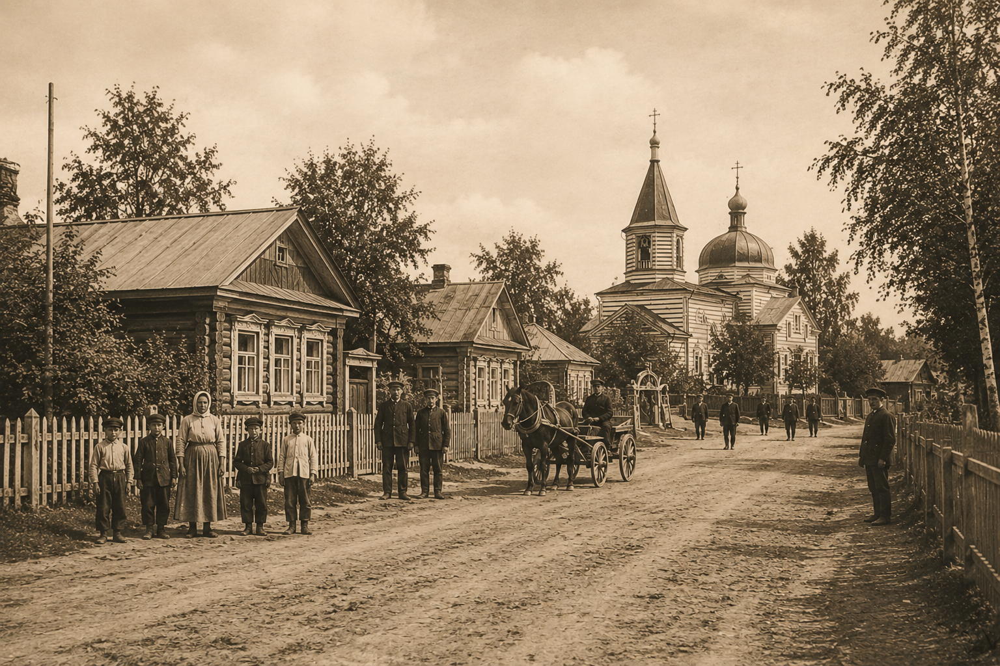
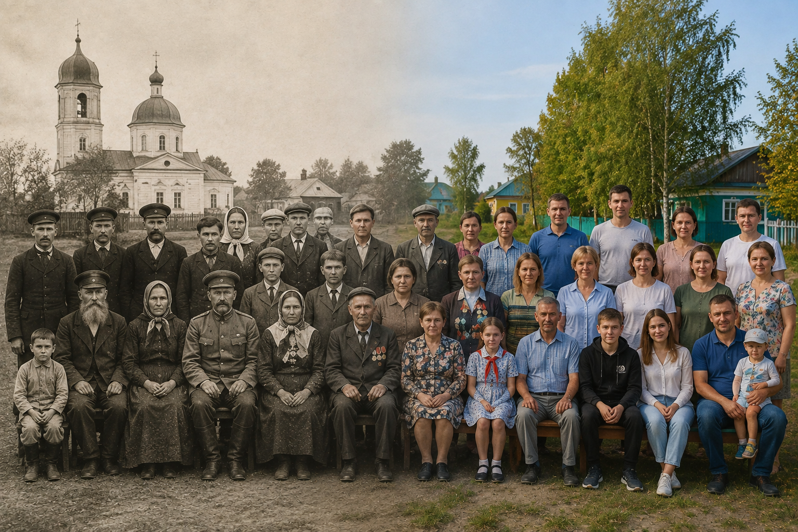
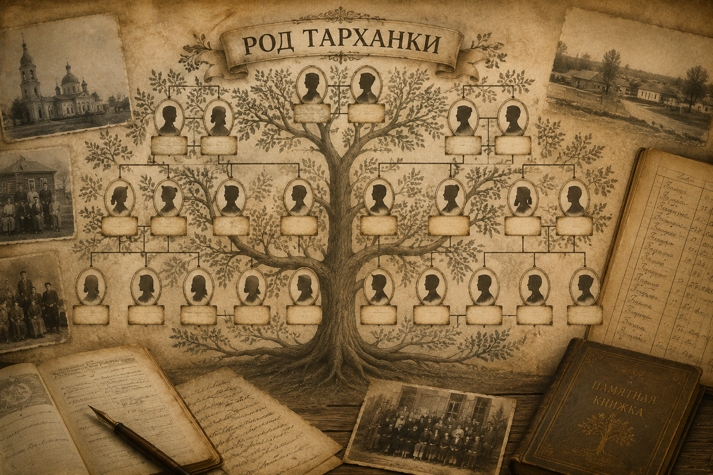

♜
История

История села, важные события и судьба Тарханки в разные эпохи.
♟
Люди

Биографии жителей Тарханки, их судьбы и вклад в историю села.
♣
Роды

Родословные, старые семьи и история тарханских родов.
▤
Документы
Архивные документы, карты, книги и исторические источники.
Открыть раздел →
◉
Фотоархив

Старые и современные фотографии села, жителей и памятных событий.